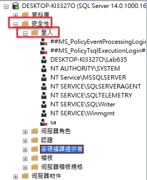

前言
接續上一篇API的專案建立教學，這一篇會帶大家使用SQL Server建立資料庫與資料表，為我們下一篇的EF Core 3.0資料對應做準備。
這一系列的文章比較偏向讓大家看完能夠有一些比較基本的觀念，並且會附加比較多的實作教學，因此可能解釋一些觀念的時候，不會用太精細的方式來與大家做探討，請大家多多見諒！主要想讓大家對觀念的理解可以剛好輔助實作就好，如果對觀念有更深的興趣歡迎尋找更多文章，或這看我文中提到的更深入的文章，也可以在下方回應與大家分享自己看到的資訊哦～！

開始實作
初始化設定SQL Server
如果你跟我一樣是剛在電腦上安裝SQL Server以及SQL Server Managament Studio（SSMS），那麼首先我們要先設定一些東西，讓往後的資料庫操作可以順利進行
- 打開SSMS 2018
- 點擊「連線」使用預設的「Windows驗證」來連線到本機的SQL Server伺服器。
- 連線成功後左邊就會顯示如以下圖片所示
- 在連線成功後，首先我們要讓SQL Server允許使用SQL Server帳號密碼驗證方式來登入，未來開發過程中也將會用帳密的方式連線到資料苦。首先，在連線資訊上點擊「右鍵」，選擇「屬性」
- 選擇左邊的「安全性」分頁，並且將「伺服器驗證」調整為「Sql Server 及 Windows驗證模式」，最後點擊「確認」
- SSMS會提示你要重新啟動SQL Server才會生效，這邊指的不是重新啟動SSMS哦，而是重啟SQL Server的組態環境
- 再次在連線資訊上點擊「右鍵」，這次選擇「重新啟動」
- 會跳出一個視窗跟你確認是否要重啟，請點選「YES」重新啟動
- 等待重新啟動的進程跑完即可
- 接下來，我們在編輯資料表時如果是使用預設的設定，會遇到有時資料表結構無法成功編輯的問題，因此我們要先去設定將資料表結構變更的設定改掉。請點選上方「工具」，並且選擇「選項」
- 選擇左邊「設計師」分頁，並且取消勾選右邊「防止儲存需要資料表重建的變更」，最後點「確定」來變更設定
以上就完成資料庫剛開始所需要執行的設定了，以後不管到哪一台電腦上，只要是重新裝了SQL Server的環境以及SSMS，都需要再重新設定一次哦！
建立登入角色及資料庫
接續上一次建立了一個API專案，這篇文要帶大家透過SQL Server來建立資料庫及資料表
- 把「安全性->登入」展開，可以看到許多系統內建的使用者

- 我們要新增一個使用者，未來在使用EF Core產生資料模型對應時會透過使用者帳號及密碼來登入到SQL中，在「登入」上面點擊「右鍵」，並選擇「新增登入」
- 輸入登入的「使用者名稱」，勾選「SQL Server驗證」，並且輸入「使用者密碼」，之後把「強制執行密碼逾期」取消勾選，最後點選「確定」
- 即可看到「dotnetcore」帳號已成功建立
- 接下來要開始建立資料庫與資料表，首先請在「資料庫」上點擊「右鍵」，並且選擇「新增資料庫」
- 輸入「資料庫名稱」後，直接點選「確定」建立資料庫
- 在左方「資料庫」底下，即可看到新增的資料庫
- 接下來我們要到剛剛新建的使用者帳號中調整權限設定，讓以後透過此帳號登入的使用者，可以存取剛剛我們新建的資料庫。請在剛剛新增的使用者上點選「右鍵」，選擇「屬性」
- 選擇左邊「使用者對應」，並且勾選剛剛建立的資料庫後，在下方資料庫角色的地方把「db_owner」、「db_datareader」及「db_datawriter」勾選起來，「db_owner」代表資料庫角色的成員可以在資料庫上執行所有的組態和維護活動，也可以卸除資料庫，「db_datareader」代表「資料庫角色的成員可以從所有使用者資料表讀取所有資料」，「db_datawriter」代表「資料庫角色的成員可以加入、刪除或變更所有使用者資料表中的資料」，設定完後點選「確定」。
- 接下來我們嘗試再使用「SQL Server驗證」方式建立一個新連接到資料庫，點擊左邊有個「連接符號」
- 之後將驗證欄位選擇為「SQL Server驗證」，並且輸入登入的「帳號」及「密碼」，最後點選「連線」
- 連線之後，可以看到左邊有兩個連線資訊，下方的就是使用「SQL Server驗證」方式連線的，展開「資料庫」若能看到剛剛我們所新建的資料庫，即代表此SQL Server驗證帳號是有權限可以操作此資料庫的
在資料庫中建立資料表與第一筆資料
接下來要帶大家在這個資料庫中建立一個「會員」資料表，會員系統是幾乎每一個網頁應用系統中都會有的一個子系統，因此不管是在資料表還是在之後的.Net Core教學中，都會先用會員系統來大家熟悉最基本的資料CRUD，讓大家未來可以利用此基礎來做延伸。
CRUD：Create、Read、Update及Delete的縮寫，意指程式中的新增、修改、刪除、查詢這四大最常做的操作。
- 展開資料庫，在「資料表」上點右鍵，選擇「新增->資料表」
- 會看到以下畫面
- 在左方「資料行名稱」的欄位中，輸入下圖的5個欄位名稱，Id代表帳號的流水號
- 將「資料類型」欄位調整如下圖，Id要設定自動累加所以設定成整數(INT)型態，這邊就不多說明各個形態的差異了，不知道的人上網Google一下就有答案囉
- 將「允許NULL」的欄位勾選成這樣，Id之後要讓他自己增加，而帳號密碼不可為空，名字與電話則可以
- 接下來選到「Id」這個資料欄位，並且在下方「資料行屬性」中找到「識別規格」，將其調成「是」之後，下方「識別值種子」是這個欄位的起始值，「識別值增量」則是每增加一筆資料，這個欄位會自動增加的量，比如第一筆就會是1，再來就是2->3->4這樣自動累加。
- 點選左上角「儲存」的圖示
- 輸入資料表名稱「Member」，並且點擊「確定」
- 在資料庫上點擊「右鍵」，並且點擊「重新整理」
- 展開資料表，就可以看到剛剛新建的資料表「Member」了
- 對「Member」資料表點擊「右鍵」，並且選擇「編輯前200個資料列」
- 在畫面中新增一筆資料，打上測試資料（Id欄位不用輸入資料哦！）
成功新增資料之後就完成囉，這樣我們就有了資料庫、資料表以及一筆資料了，下一篇文將會帶大家從.Net Core程式中下載EF Core 3.0套件，並且建立資料模型對應到資料庫中的資料表，敬請期待吧！
–
有感而發
其實在寫這第二篇文章的時候，想起了IT鐵人邦辦了好幾屆的30天發文挑戰，自己一直都不敢參加，而自己在自己部落寫文章稍微自在一些。不過在過程中一直在思考，覺得別人的Blog文章感覺都是念過非常多書、看過非常多資料才可以寫得那麼詳細，而我自己目前只能以實作面來帶著大家一步一步實作，觀念實在是非常缺乏呀！
希望未來的自己也可以邊寫文章邊越學越多，慢慢提升文章的品質，大家現在階段就先見諒，帶著尊重包容友善的心情看我的文章吧xDD有任何建議都可以提出來哦！我虛心受教！